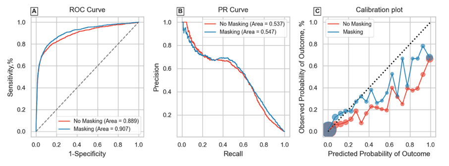
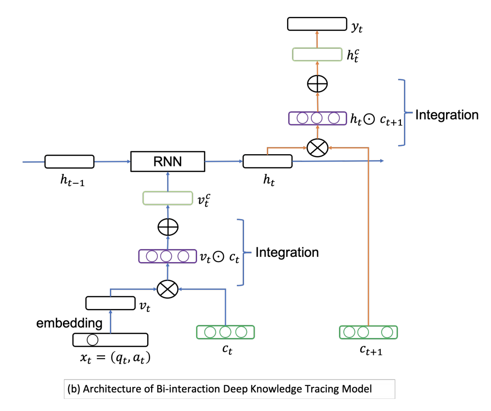
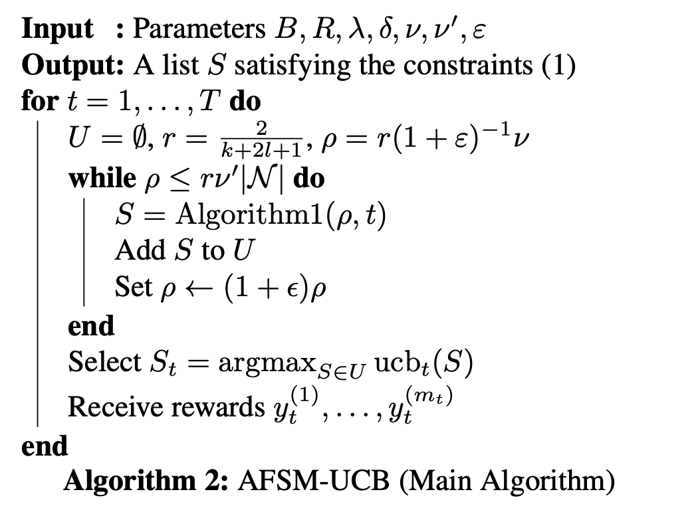
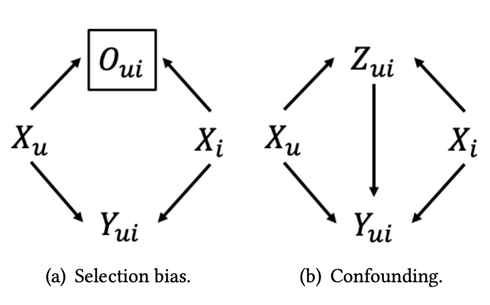
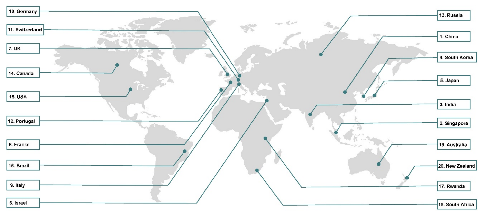
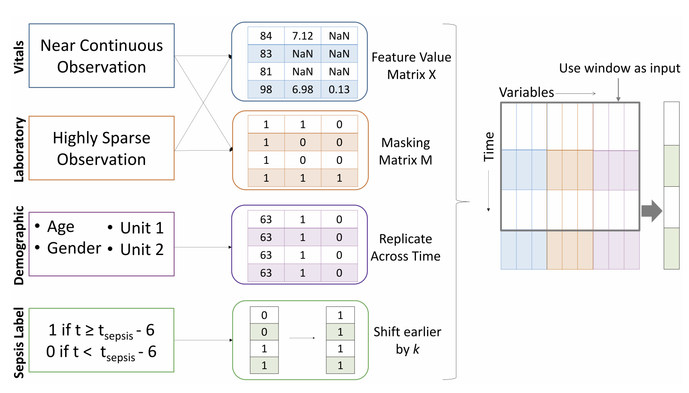
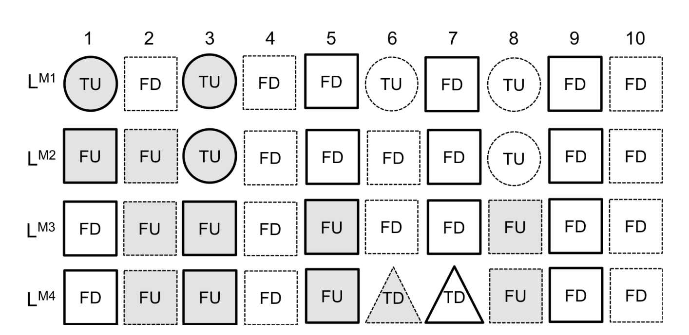

Janmajay Singh
Researcher
Researcher
Fujifilm Healthcare
I am a researcher focussed on medical applications of machine learning. My interests include modeling missing data
For more details, please see my Curriculum Vitae and Google Scholar.
2020-Present
Fujifilm Healthcare
Researcher, Quantitative Biology
2017-2020
Fuji Xerox Co., Ltd.
Researcher, Medical Informatics
Outstanding Research Award x2
2016-2017
Voonik Technologies
Research Intern, Recommendation Systems
2015-2016
Massachusetts Institute of Technology
Special Student, EECS
Research Mentor: P.H. Winston
2013-2017
SRM University
B.E., Computer Science and Engineering
First Class with Distinction
Selected Research
-

On Missingness Features in Machine Learning Models for Critical Care: Observational Study
Janmajay Singh, Masahiro Sato, Ohkuma Tomoko
JMIR Medical Informatics, 2021 (forthcoming)
[Abstract] [Paper]Background: Missing data in Electronic Health Records is inevitable and considered to be non-random. Several studies have found that features indicating missing patterns (missingness) encode useful information about a patient's health and advocate their inclusion in clinical prediction models. But their effectiveness has not been comprehensively evaluated. Objective: To study the effect of including informative missingness features in machine learning models for various clinically relevant outcomes and explore robustness of these features across patient subgroups and task settings.
Methods: A total of 48,336 electronic health records from the 2012 and 2019 Physionet Challenges were used and mortality, length-of-stay (LOS) and sepsis outcomes were chosen. The latter dataset was multi-center, allowing external validation. Gated Recurrent Units were used to learn sequential patterns in the data and classify or predict labels of interest. Models were evaluated on various criteria evaluating discriminative ability and calibration, as well as across population subgroups.
Results: Generally improved model performance in retrospective tasks was observed on including missingness features. Extent of improvement depended on the outcome of interest (AUROC improved 1.2% - 7.7%) and even patient subgroup. However, missingness features did not display utility in a simulated prospective setting, being outperformed (0.9% difference in AUROC) by the model relying only on pathological features. This was despite leading to earlier detection of disease (true positives), since including these features led to a concomitant rise in false positive detections.
Conclusions: This study comprehensively evaluated effectiveness of missingness features on machine learning models. A detailed understanding of how these features affect model performance may lead to their informed use in clinical settings especially for administrative tasks like LOS prediction where they present the greatest benefit. While missingness features, representative of healthcare processes, vary greatly due to intra and inter-hospital factors, they may still be used in prediction models for clinically relevant outcomes. However, their use in prospective models producing frequent predictions needs to be explored further. -

Incorporating Wide Context Information for Deep Knowledge Tracing using Attentional Bi-interaction
Raghava Krishnan, Janmajay Singh, Masahiro Sato, Qian Zhang, Tomoko Ohkuma
L2D’21: First International Workshop on Enabling Data-Driven Decisions from Learning on the Web
[Abstract] [Paper]Online learning platforms also known as Computer Aided Education Systems have recently grown in importance owing to their ability to personalize study plans in accordance with individual student requirements. Learning platforms have modeled student knowledge state using student responses with the recently popular Deep Knowledge Tracing (DKT) technique. Using context information has also proven effective in various predictive problems prompting learning platforms to store a variety of context features about a student’s performance history. An example context may be response time, where shorter times to answer questions may indicate higher mastery of a skill. Therefore, it is crucial to incorporate context features in the most effective way possible. Most of the research in DKT either use no context features, or use a set of context features that span only a narrow set of student characteristics. To overcome this, we identify a wide set of context features and incorporate their interactions into the DKT model. We then observe the effects of incorporating these additional context feature interactions and also propose an adaptive weighting technique that learns the appropriate context feature interaction weights. These techniques are compared with state-of-the-art baselines and their performances were evaluated using AUC scores. -

Submodular Bandit Problem Under Multiple Constraints
Sho Takemori, Masahiro Sato, Takashi Sonoda, Janmajay Singh, Tomoko Ohkuma
UAI '20: Proceedings of the 36th Conference on Uncertainty in Artificial Intelligence
[Abstract] [Paper]The linear submodular bandit problem was proposed to simultaneously address diversified retrieval and online learning in a recommender system. If there is no uncertainty, this problem is equivalent to a submodular maximization problem under a cardinality constraint. However, in some situations, recommendation lists should satisfy additional constraints such as budget constraints, other than a cardinality constraint. Thus, motivated by diversified retrieval considering budget constraints, we introduce a submodular bandit problem under the intersection of 𝑙 knapsacks and a 𝑘-system constraint. Here 𝑘-system constraints form a very general class of constraints including cardinality constraints and the intersection of 𝑘 matroid constraints. To solve this problem, we propose a non-greedy algorithm that adaptively focuses on a standard or modified upper-confidence bound. We provide a high-probability upper bound of an approximation regret, where the approximation ratio matches that of a fast offline algorithm. Moreover, we perform experiments under various combinations of constraints using asynthetic and two real-world datasets and demonstrate that our proposed method outperforms the existing baselines. -

Unbiased Learning for the Causal Effect of Recommendation
Masahiro Sato, Sho Takemori, Janmajay Singh, Tomoko Ohkuma
RecSys '20: Fourteenth ACM Conference on Recommender Systems
[Abstract] [Paper]Increasing users’ positive interactions, such as purchases or clicks, is an important objective of recommender systems. Recommenders typically aim to select items that users will interact with. If the recommended items are purchased, an increase in sales is expected. However, the items could have been purchased even without recommendation. Thus, we want to recommend items that results in purchases caused by recommendation. This can be formulated as a ranking problem in terms of the causal effect. Despite its importance, this problem has not been well explored in the related research. It is challenging because the ground truth of causal effect is unobservable, and estimating the causal effect is prone to the bias arising from currently deployed recommenders. This paper proposes an unbiased learning framework for the causal effect of recommendation. Based on the inverse propensity scoring technique, the proposed framework first constructs unbiased estimators for ranking metrics. Then, it conducts empirical risk minimization on the estimators with propensity capping, which reduces variance under finite training samples. Based on the framework, we develop an unbiased learning method for the causal effect extension of a ranking metric. We theoretically analyze the unbiasedness of the proposed method and empirically demonstrate that the proposed method outperforms other biased learning methods in various settings. -

Remote health diagnosis and monitoring in the time of COVID-19
Joachim A Behar, Chengyu Liu, Kevin Kotzen, Kenta Tsutsui, Valentina D A Corino, Janmajay Singh, ..., Gari D Clifford
Physiological Measurement
[Abstract] [Paper]Coronavirus disease (COVID-19), caused by the severe acute respiratory syndrome coronavirus 2 (SARS-CoV-2), is rapidly spreading across the globe. The clinical spectrum of SARS-CoV-2 pneumonia requires early detection and monitoring, within a clinical environment for critical cases and remotely for mild cases, with a large spectrum of symptoms. The fear of contamination in clinical environments has led to a dramatic reduction in on-site referrals for routine care. There has also been a perceived need to continuously monitor non-severe COVID-19 patients, either from their quarantine site at home, or dedicated quarantine locations (e.g. hotels). In particular, facilitating contact tracing with proximity and location tracing apps was adopted in many countries very rapidly. Thus, the pandemic has driven incentives to innovate and enhance or create new routes for providing healthcare services at distance. In particular, this has created a dramatic impetus to find innovative ways to remotely and effectively monitor patient health status. In this paper, we present a review of remote health monitoring initiatives taken in 20 states during the time of the pandemic. We emphasize in the discussion particular aspects that are common ground for the reviewed states, in particular the future impact of the pandemic on remote health monitoring and consideration on data privacy. -

Utilizing Informative Missingness for Early Prediction of Sepsis
Janmajay Singh, Kentaro Oshiro, Raghava Krishnan, Masahiro Sato, Tomoko Ohkuma, Noriji Kato
Computing in Cardiology, 2019
[Abstract] [Paper]Aims: Physicians have to routinely make crucial decisions about patients’ health in the ICU. Sepsis affects about 35% of ICU patients, killing approximately 25% of the afflicted. In this paper, we aim to predict the occurrence of sepsis early by studying the missingness of physiological variables and using it with the overall trends in data.
Methods: We chose XGBoost as our base model and tried several variations by changing hyperparameters, window sizes and imputation methods. To further improve the model, we used masking vectors to represent the missingness of features in the dataset. Additional modifications include shifting the Sepsis Label to earlier time steps and tuning the classification probability threshold to further improve the model’s performance.
Results: The XGBoost model with a sliding window of size 5, no imputation, utilizing informative missingness of all temporal variables and trained on labels shifted by 3 hours before toptimal, achieved a Utility Score of 0.337 on the full test set. We identified as ”CTL-Team” in the challenge and were officially ranked 5th on the basis of this score. -

Uplift-based evaluation and optimization of recommenders
Masahiro Sato, Janmajay Singh, Sho Takemori, Takashi Sonoda, Qian Zhang, Tomoko Ohkuma
RecSys '19: Proceedings of the 13th ACM Conference on Recommender Systems
[Abstract] [Paper]Recommender systems aim to increase user actions such as clicks and purchases. Typical evaluations of recommenders regard the purchase of a recommended item as a success. However, the item may have been purchased even without the recommendation. An uplift is defined as an increase in user actions caused by recommendations. Situations with and without a recommendation cannot both be observed for a specific user-item pair at a given time instance, making uplift-based evaluation and optimization challenging. This paper proposes new evaluation metrics and optimization methods for the uplift in a recommender system. We apply a causal inference framework to estimate the average uplift for the offline evaluation of recommenders. Our evaluation protocol leverages both purchase and recommendation logs under a currently deployed recommender system, to simulate the cases both with and without recommendations. This enables the offline evaluation of the uplift for newly generated recommendation lists. For optimization, we need to define positive and negative samples that are specific to an uplift-based approach. For this purpose, we deduce four classes of items by observing purchase and recommendation logs. We derive the relative priorities among these four classes in terms of the uplift and use them to construct both pointwise and pairwise sampling methods for uplift optimization. Through dedicated experiments with three public datasets, we demonstrate the effectiveness of our optimization methods in improving the uplift.